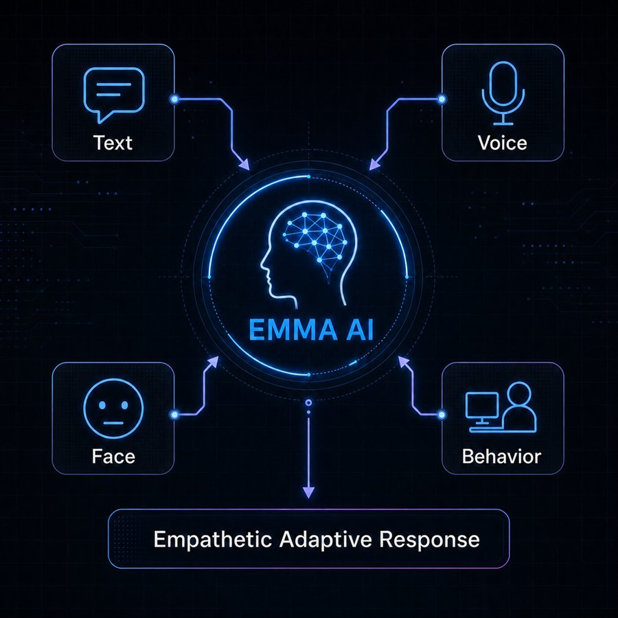
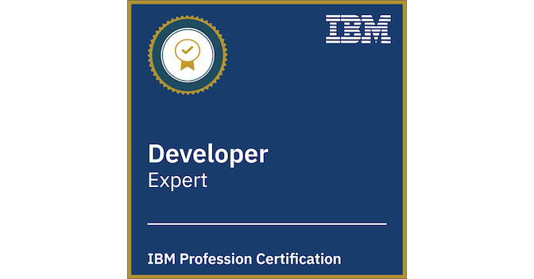

Years of experience
Arun C S
Staff Software Engineer
Engineering resilient systems at scale.
I build scalable .NET platforms, modernize cloud systems, and create AI-assisted engineering tools.
Bengaluru, India
Selected work belowProduct sales growth
Faster troubleshooting
Log lines analyzed
Selected work
Engineering decisions. Measurable impact.
Explore the systems, tradeoffs, and outcomes behind my work.
Envizi dataSustainability records
Export serviceReusable dataset generation
Planning AnalyticsEnterprise planning
Enterprise platforms
Enterprise data integration
Connecting sustainability data with enterprise planning through a reusable export platform.
Commercial outcomeFirst commercial outbound integration
- .NET
- SQL
- APIs
Engineer questionNatural-language intent
MCP serverDiagnostic query workflow
OpenSearchLogs → findings
AI-assisted engineering
AI-assisted troubleshooting
Turning engineering questions into guided log investigation for Power BI refresh diagnostics.
Estimated outcome~60% less investigation effort
- MCP
- OpenSearch
- AI workflows
Arun consistently demonstrates a results-driven approach, effectively translating complex requirements into robust and efficient applications.Read recommendations
About
Deep engineering.
Practical leadership.
Career at a glance
I’m a Staff Software Engineer with 8+ years of experience building scalable enterprise solutions across sustainability, healthcare, and SaaS.
My work spans backend services, data platforms, distributed communication, cloud architecture, and AI-assisted engineering. I focus on making systems easier to operate, faster to troubleshoot, and ready to evolve.
Beyond delivery, I contribute through architecture discussions, code reviews, technical mentorship, and cross-functional leadership—turning ambitious ideas into dependable products.
Core expertise
A backend foundation built for complexity.
From system design to production observability, I work across the layers that make enterprise software dependable.
Systems engineering
Distributed systems
Microservices, concurrency, messaging, caching, failure recovery, and resilient communication patterns.
Architecture & reliability
System design, fault tolerance, observability, performance optimization, and production operations.
Platforms & integration
Cloud platforms
Azure, AWS S3, cloud-native services, CI/CD, Application Insights, and secure platform modernization.
APIs & integration
REST, gRPC, NetMQ, secure authentication, service contracts, batching, retries, and platform interoperability.
Data & intelligence
Data platforms
SQL Server, ETL, SSIS, SSAS, Cosmos DB, Redis, Elasticsearch, analytical workflows, and large migrations.
AI-assisted solutions
LLMs, Amazon Bedrock, MCP, prompt engineering, AI agents, and intelligent production observability.
Core stackC#.NETASP.NET CoreSQL ServerAzureElasticsearchPower BI
Engineering stories
From product features to reusable platform capabilities.
Selected work from IBM Envizi showing how I approach architecture, scale, operational reliability, and technical enablement.
The principle behind the work
Build solutions that solve the immediate requirement while creating a scalable foundation for future use cases.
10Mattachments migrated
300–400 GBdatabase storage reduced
20+engineers mentored
60%estimated investigation reduction
01
Enterprise integration
Key outcomeFirst commercial outbound integration
Connecting sustainability data with enterprise planning
Designed a reusable export platform and secure integration pipeline capable of processing millions of ESG records across different enterprise data models.
My roleSolution architecture, cross-product integration design, and reusable export-platform delivery.
Read case study
- Envizi data
- Export service
- Cloud storage
- Planning Analytics
- Problem
- High-volume transfer, schema alignment, secure APIs, global environments, and safe failure recovery.
- Decisions
- Separated generic dataset generation from the Planning Analytics delivery component, with controlled batches, validation, retries, logging, and restartability.
- Impact
- Created Envizi’s first commercially available outbound integration and a reusable export capability for future analytics use cases.
02
Cloud modernization
Key outcome10M files migrated · 300–400 GB reduced
Moving ten million attachments safely to object storage
Led the solution design and core development of a reusable .NET Core attachment platform backed by AWS S3.
My rolePrimary developer and solution designer for the reusable attachment platform and global migration.
Read case study
- Database files
- Restartable batches
- AWS S3
- Validated references
- Problem
- Migrate approximately 10 million database files globally without planned customer downtime.
- Decisions
- Stable object references, authorization-first pre-signed URLs, restartable batches, reconciliation, targeted retries, and a controlled rollback window.
- Impact
- Completed the migration across global environments and reduced database storage by an estimated 300–400 GB.
03
Platform security
Key outcomeReusable reporting authorization foundation
Creating reusable, granular reporting authorization
Replaced broad report visibility with a consistent authorization model spanning access levels, work roles, groups, and individual users.
My roleLed the authorization-model design and implementation across database, backend, reporting, and user-experience layers.
Read case study
- Access context
- .NET services
- Report policy
- Power BI
- Problem
- Protect sensitive reporting information while supporting complex enterprise organizational structures.
- Decisions
- A reusable workflow across SQL, .NET services, APIs, Power BI integration, and the user experience.
- Impact
- Established a foundation for future reporting-security capabilities and reduced routine support dependency.
04
AI-assisted operations
Key outcome≈60% less investigation effort
Turning natural-language questions into production diagnostics
Developed an MCP and OpenSearch framework that converts an engineer’s question into diagnostic queries for Power BI refresh investigations.
My roleDesigned and developed the MCP-based diagnostic framework and its OpenSearch query workflow.
Read case study
- Engineer question
- MCP server
- OpenSearch DSL
- Diagnostics
- Problem
- Engineers manually searched large log volumes and repeatedly constructed complex operational queries.
- Decisions
- Natural-language intent translated into OpenSearch DSL with relevant execution, workspace, gateway, and dataset context.
- Impact
- Reduced investigation effort by an estimated 60% and created a foundation for automated diagnostics and proactive monitoring.
Technical leadership
Building engineering capability alongside platform capability.
I have mentored approximately 20 engineers across architecture, SQL performance, Power BI, APIs, production troubleshooting, cloud design, deployment, and validation. I also lead recurring engineering sessions across India and Australia to discuss architecture decisions, production issues, and reusable implementation approaches.
Innovation & publications
IBM defensive publicationEMMA
Emotional Multi-Modal Assistance AI
A multimodal AI concept exploring how digital systems can interpret emotional context and adapt their responses to create more empathetic, relevant, and human-centered experiences.
View defensive publicationHow EMMA works
EMMA combines signals from text, speech, facial expressions, user behaviour, and interaction context. The framework proposes using this combined emotional context to adapt response tone, detail, communication style, recommended actions, and escalation behaviour.
Published outcomePublished June 1, 2026
Published as prior art for multimodal, emotionally aware assistance systems.
Multimodal AIEmotional contextAssistance systemsResponsible innovation
My contribution
Invention ideation and disclosure development
I contributed to defining the problem, exploring how multimodal emotional signals could be combined, and developing the invention disclosure through IBM’s intellectual-property process.
Publication details & identifiers

Conceptual signal flow
Experience
Building across industries and scale.
A journey of solving complex problems, designing reliable systems, and delivering measurable impact across healthcare and enterprise sustainability.
8+Years of experience
3Companies
2Industries
20+Engineers mentored
Nov 2023Present
IBM
Staff Software Engineer
Enterprise sustainability platform · Backend architecture, data integration and AI-assisted engineering
Leading the design and evolution of backend services, data workflows, and platform capabilities for enterprise sustainability reporting.
- Lead the design and delivery of backend services, platform enhancements, and architectural initiatives for the IBM Envizi Reporting Module.
- Architected a scalable enterprise integration that contributed to a 25% increase in product sales and earned the IBM Entrepreneur Award.
- Designed an MCP server connecting AI workflows with Elasticsearch log data, reducing troubleshooting effort by an estimated 60%.
More contributions
- Drive architecture discussions, performance optimization, code reviews, cross-team delivery, and technical mentorship.
Core stack.NET CoreSQL ServerSSIS/SSASPower BIElasticsearchMCP
Impact
IBM Developer Profession — Level 3 ExpertSubject Matter ExpertIBM Entrepreneur AwardContributed to 25% sales growth~60% estimated troubleshooting reduction
Dec 2021Nov 2023
Philips
Senior Software Engineer
Medical imaging R&D · Distributed systems, diagnostic tooling and communication frameworks
Built high-performance distributed medical software, reusable communication frameworks, and diagnostic automation for CT Modality R&D.
- Contributed to the design and development of distributed medical software used in CT Modality R&D.
- Developed a knowledge-based tool that analyzed more than 1 billion log lines across 15,000+ files, reducing manual investigation time by 95%.
- Built a modular communication framework supporting gRPC, NetMQ, and WCF with caching, exception handling, and service-proxy control.
More contributions
- Created ELK dashboards for analyzing large-scale hospital-reported diagnostic data.
Core stack.NETgRPCNetMQWCFELK Stack
Impact
1B+ log lines analyzed95% less manual investigationgRPC · NetMQ · WCF
May 2018Dec 2021
CareStack
Software Engineer II
Healthcare SaaS · Clinical platform development, backend integration and data performance
Owned engineering for the Clinical module of a cloud dental platform, improving data performance, reliability, and maintainability.
- Led end-to-end development for the Clinical module of a cloud-based dental practice-management platform.
- Optimized SQL queries and schema design, contributing to an approximately 40% improvement in database performance.
- Integrated DoseSpot prescription management, strengthening the platform’s clinical capabilities and supporting client acquisition.
More contributions
- Modernized critical components from AngularJS to Angular and served as Scrum Master for a seven-member team.
Core stack.NETSQL ServerAngularAPI integrations
Impact
40% database improvementBest Performer AwardScrum Master · 7-member team
20142018
Academic Background
Bachelor of Technology (B.Tech)
Computer Science and Engineering
Mahatma Gandhi University
Muthoot Institute of Technology and Science · Affiliated college
Academic record
CGPA: 8.3/10First Class with Honours
Campus leadership
- Chairman, Clique — Computer Engineering Students Association 2016–2018 · Organized technical workshops covering deep learning, big-data processing, Arduino, CUDA, web development, and Android development.
- Resource Person, MITS Innovation Center 2016–2018 · Conducted Android development and Arduino workshops for students.
Awards & recognition
Recognition backed by sustained impact.
Selected awards, leadership recognition, and credentials reflecting technical depth and continuous growth.

Developer Profession — Level 3 Expert
Recognized as a Subject Matter Expert
Recognized by IBM for technical expertise, leading others, and contributing innovative ideas across business units and geographies.
View LinkedIn announcement
Open on LinkedInRecognized for leading the Envizi–Planning Analytics integration and creating a reusable enterprise export capability that contributed to product growth.
Credentials & earlier recognition
Continuing to learn. Building on experience.
Recognized at CareStack for consistent, high-impact contributions to product stability, performance, and delivery.
LinkedIn recommendations
Trusted by the people I build with.
Key takeawayTechnical excellence with business results. Turns complex requirements into reliable applications through collaboration, problem-solving, and a strong work ethic.
Read full recommendation
Arun consistently demonstrates a results-driven approach, effectively translating complex requirements into robust and efficient applications. His collaborative nature and problem-solving skills contribute significantly to the success of the projects he undertakes. I highly recommend Arun for any role that requires technical excellence, innovative thinking, and a strong work ethic.
Key takeawayMicrosoft expertise and a dependable team mindset. Goes beyond expectations, adapts positively to challenges, and contributes to a collaborative environment.
Read full recommendation
As the great team player at Philips Healthcare, I have had the pleasure of working closely with Arun for almost two years. In this time, he has consistently demonstrated exceptional skills and contributions. Arun possesses an impressive range of skills, particularly in Microsoft technologies. Arun exhibits a commendable work ethic, often going above and beyond expectations. He tackle challenges with positivity and have shown a remarkable ability to handle situations or adapt to changes. He actively engage with team members, fostering a collaborative environment. Arun is a great asset to the team and was really happy having him in my team.
Key takeawayConsistent delivery and practical team support. Combines technical ability with commitment, helping and guiding colleagues toward their deliverables.
Read full recommendation
Arun worked in my Team at Philips, we together worked for a year. He is Technically good and dedicated and committed towards his deliverables. Consistently in each Iteration. He is a team player and assist and guide the team members while they archive their deliverables. I wish Arun All the very best and am sure whichever team and company is part of is lucky :)
Key takeawayFast problem-solving and supportive mentorship. Helps teammates through urgent technical tasks and guides engineers entering the industry.
Read full recommendation
Arun has the amazing problem solving ability to solve technical problems in a very fast pace. Being a great team player he had helped me in few crucial and time bound tasks. Being a fresher in the industry Arun's Mentorship was surely helpful.
Key takeawayTrusted to deliver under deadlines. Brings energy and dependability to time-sensitive development work.
Read full recommendation
I am currently working with Arun, he is such a person, when there is deadline, management can trust a person to complete that task. He is the most energetic and emerging developers.
Key takeawayLarge-scale application design and independent ownership. Applies Microsoft technology expertise to complex modules within major projects.
Read full recommendation
I worked with Arun in the same team. He is a very experienced individual in Microsoft Technologies and has a great sense of designing large scale applications. During our work I could see that he individually handled some of the complex modules of the large project. I am pretty sure that he would be a great asset for the organization wherever he will be hired.
Key takeawayHigh standards without missing deadlines. Brings motivation, hard work, and technical expertise to delivery.
Read full recommendation
Arun is a motivated, hard-working, and intelligent developer who is expertise in his area. He makes sure all the deadlines meet and that also with the highest standards. I would recommend and endorse Arun.
Key takeawayApproachable, confident, and supportive. Takes on challenges and helps strengthen the team’s confidence.
Read full recommendation
Arun is a self-motivated hard-working professional who is easy to approach when one is in need. He is confident and open to challenges. He is a good team player and boosts the confidence of the team.
Key takeawayTrusted technical contributor. Combines technical expertise, initiative, and dedication to deliver meaningful team results.
Read full recommendation
Arun was essential to the team, and contributed significantly to the deliverabes. Arun is dedicated, self-motivated and very capable. He showed a high level of our domain technical skills and was a valuable contributor to our projects. Arun is a trustworthy individual and I will always hold him in the highest esteem.
Key takeawayMotivation, hard work, and programming knowledge. Recognized for dedication and knowledge across programming languages.
Read full recommendation
Highly motivated and hardworking.... Good knowledge in various programming languages...